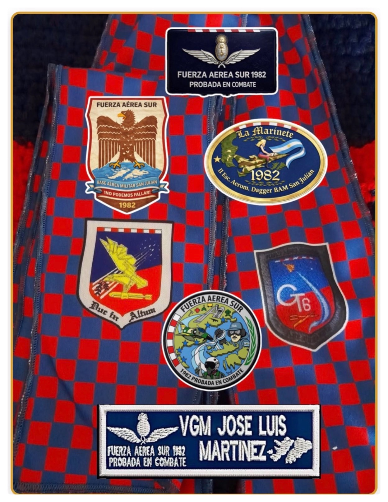

Fuerza Aérea Sur — Malvinas 1982
TESTIMONIO DE UNA TRILOGÍA
II Escuadrón Aeromóvil de Guerra M-5 IAI Dagger «La Marinete»
Base Aérea Militar San Julián — Provincia de Santa Cruz
I. El Avión
Sistema de Armas M-5 IAI Dagger. Vector supersónico de combate.
II. Personal de Tierra
Mantenimiento, armeros y especialistas en la BAM San Julián.
III. El Piloto
Pilotos de combate ejecutores de las misiones operativas.
Escaneá para abrir y descargar el Libro PDF Completo

